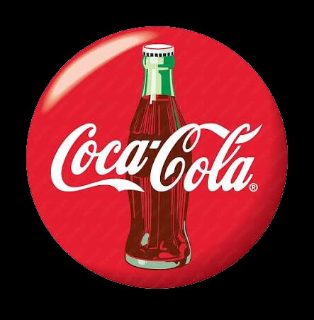

Coca-Cola and the Modern Santa Claus
From Nick to Now
Coca-Cola and the Modern Santa Claus
Think Santa was always a fat jolly man in a bright red suit? Think again. The modern image of Santa Claus actually owes its fame to a long running beverage campaign. Discover the fascinating story of how Coca-Cola permanently reshaped our favorite holiday icon.
Did you know that Santa was not always the jolly man in a red suit that we know today? Before the 20th century, this famous holiday figure appeared in many different forms. He was often portrayed as a tall, thin man rather than the fat jolly fellow we know today. His robes were usually blue, green, or brown. Before the mid 1800s, Santa's was rarely, if at all, depicted as a fat round man in a red suit.
Santa's origin can be traced back to Saint Nicholas, a Greek bishop who lived in what is now Turkey and was born around the year 280. Saint Nicholas became famous for his generosity and his habit of giving gifts in secret. According to popular legends, he sometimes tossed bags of gold through open windows to help poor families. Over time, stories of his kindness spread across Europe. These stories helped to form the Christmas legend we know today.
Before the 1930s, the depictions of Santa were inconsistent. The biggest step toward the consistency and modernization of Santa's image came in 1931. At that time, the Coca-Cola Company was looking for a way to increase sales during the cold winter months. Most people thought of soda as a drink for hot summer days, so Coca-Cola needed a new advertising idea. So the company hired an artist named Sundblom to create a friendly version of Santa Claus for its holiday advertisements.
Sundblom took inspiration from the famous 1822 poem A Visit from St. Nicholas, better known as 'Twas the Night Before Christmas. He painted Santa as a cheerful old man with rosy cheeks, a thick white beard, a round belly, and twinkling eyes. Sundblom's Santa wore black boots and a bright red suit trimmed with white fur. Although some earlier artists had already drawn Santa in red clothing, Sundblom's version was especially memorable. Most importantly, the colors intentionally matched Coca-Cola's well-known logo—the brand name written in flowing white script on a large red button sign.

Sundblom's Santa soon appeared everywhere. From 1931 to 1964, he smiled from magazine pages, shop displays, calendars, and giant billboards. The advertisements often showed him reading children's letters, delivering presents, or taking a break to enjoy a bottle of Coca-Cola. Because millions of people saw these images year after year, this version of Santa became deeply fixed in the public imagination.
Coca-Cola did not invent Santa Claus, and it did not create the first red-suited Santa. However, its advertising campaign helped standardize and popularize a particular image of him. Thanks largely to Sundblom's artwork, the cheerful, red-suited Santa became the version recognized by people around the world. Today, when most people imagine Santa Claus, they are picturing a character shaped not only by centuries of tradition, but also by one of the most successful advertising campaigns in history.